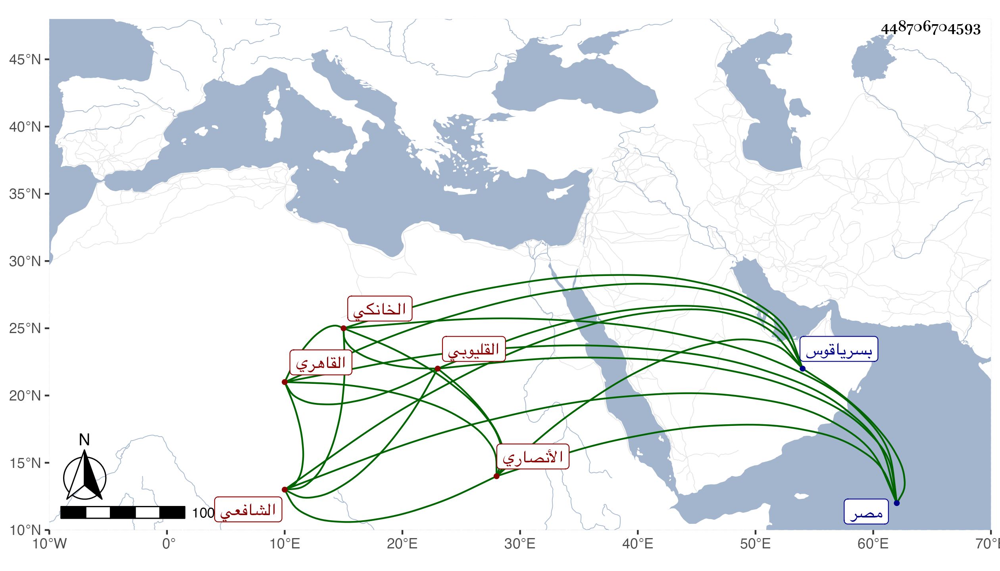

0902Sakhawi.DawLamic.ITO20230111-ara1.EIS1600.448706704593
Biography ID: 448706704593
172
محمد بن عبد الله بن أبي بكر الشمس الأنصاري القليوبي ثم القاهري الخانكي الشافعي والد محي الدين محمد الآتي ويعرف جده بابن أبي موسى . ولد في يوم الأحد خامس عشري ربيع الأول سنة ثمان وثلاثين وسبعمائة وأخذ الفقه عن الولي الملوي والبهاء بن عقيل والجمال الأسنائي وقريبه العماد الأسنائي والعلاء الأقفهسي والبهاء السبكي والشهاب بن النقيب والأبناسي والضياء العفيفي بحث عليه الحاوي والأصول عن التاج السبكي وبحث عليه بعض مؤلفه جمع الجوامع والفرائض عن الكلائي والفنون عن أكمل الدين الحنفي وأرشد الدين العجمي والقراآت السبع عن السيف بن الجندي والمجد الكفتي وناصر الدين الترياقي ، وتقدم في العلوم وتميز في الفرائض وأذنوا له وكذا أذن له ابن الملقن في التدريس والإفتاء والجلوس على السجادة والضياء في التدريس والتاج السبكي وغيرهم ، وسمع على الزين العراقي والبلقيني وابن أبي المجد بل سمع على العفيف اليافعي الصحيحين وعدة من تصانيفه وعلى أبي عبد الله بن خطيب بيروذ والتقي علي بن محمد بن علي الأيوبي والجمال بن نباتة والمحب الخلاطي ومما سمع عليه السنن للدارقطني وعلى الذي قبله سيرة ابن هشام والعرضي ومظفر الدين بن العطار وحدث ودرس وأفتى ، وممن أخذ عنه الفقه وغيره القاياتي والونائي وآخرون وقرأ على الزين رضوان ومحمود الهندي وكذا قال الشهاب الزفتاوي أنه قرأ عليه في خانقاه المواصلة بين الزقاقين بمصر وكان شيخها . قال شيخنا في إنبائه : واشتهر بالدين والخير وكان متواضعا لينا متقللا جدا إلى أن قرر في مشيخة الخانقاه الناصرية بسرياقوس فباشرها حتى مات في يوم الخميس ثاني عشري جمادى الأولى سنة اثنتي عشرة ، وفي ترجمته من التاريخ الكبير زيادات رحمه الله .
